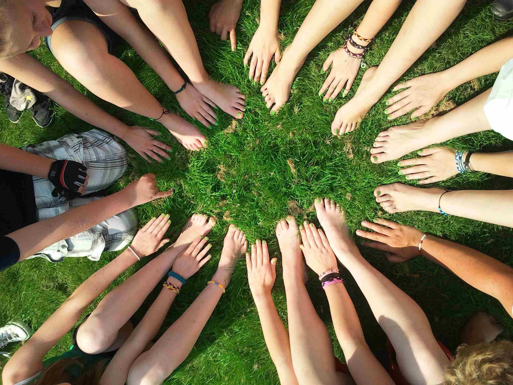
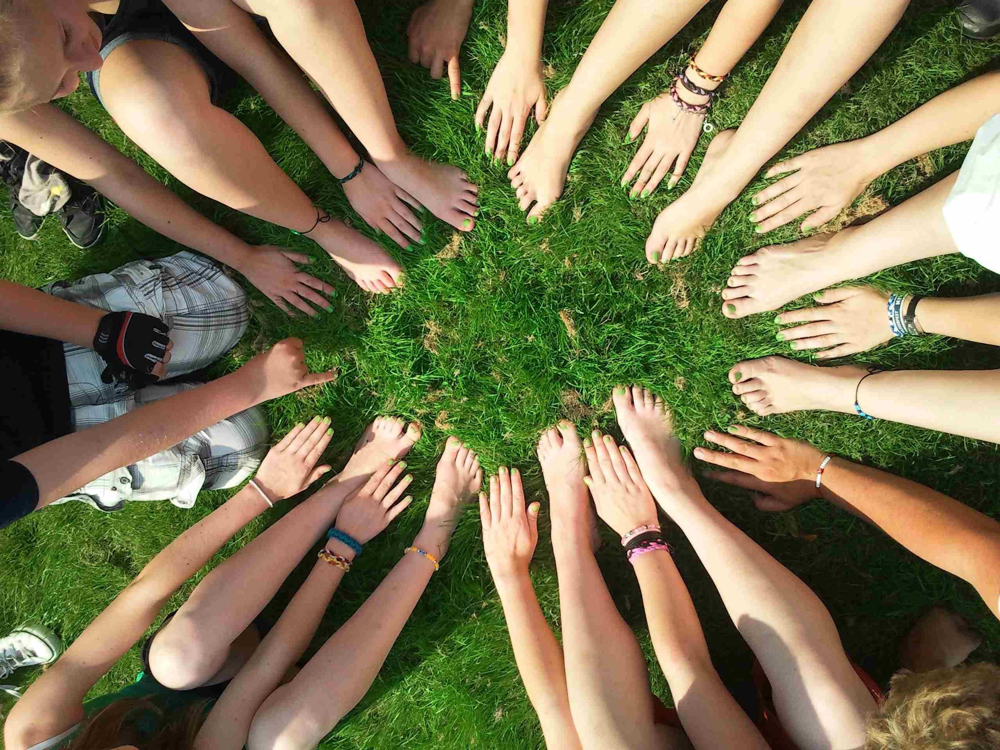

VÅRE VERDIER
Etikken fokuserer på miljøvennlige, menneskevennlige og dyrevennlige dagligvarer og gaver. Det er et lite supermarked for den etisk bevisste, og en himmel for sjokoladeelskere, te- og kaffeentusiaster. Etikkens fem kjerneprinsipper er økologisk bærekraft, rettferdig handel, dyrevelferd, helse og tilgjengelighet. Under kan du lese mer om disse verdiene.
ØKOLOGISK BÆREKRAFT
Vi foretrekker kortreist og økologisk mat og gjør vårt beste for å finne det mest bærekraftige alternativet tilgjengelig for alle produkttyper, samtidig som vi prøver å holde bruken av emballasje på et minimum.
RETTFERDIG HANDEL
Etikken skal tilby varer som kan vise til gode og rettferdige arbeidsvilkår i alle ledd av produksjonen. Der vi har mulighet til det, handler vi direkte med produsenten etter selv å ha besøkt arbeidsplassene.
DYREVELFERD
Vi handler ikke med leverandører som utsetter dyr eller mennesker for lidelse med viten og vilje. Hos oss finner du ingen varer som er testet på dyr.

HELSE
Etikken ønsker å tilby varer som fremmer god helse, og foretrekker derfor naturprodukter uten helse- og miljøskadelige stoffer så langt vi får det til.
TILGJENGELIGHET
Vi mener at disse prinsippene er selvfølgelige, allmenne, etiske krav og ikke noe en skal måtte betale ekstra for, med mindre det er nødvendig for å ivareta anstendige arbeidsvilkår hos produsentene. Etikken bestreber tilgjengelighet, respekt og åpenhet.
LES MER OM VERDIENE
I linkene under kan du finne mer informasjon om økologisk produksjon og rettferdig handel.
Generelt om etisk og miljøvennlig forbruk i hverdagen
Grønn Hverdag: http://www.gronnhverdag.no/
Økologi
Debio og ø-merket: http://debio.no
Matportalen : http://matportalen.no/Emner/okologi
Oikos - Økologisk Norge : http://www.oikos.no
Rettferdig handel
Fairtrade Max Havelaar Norge: http://www.maxhavelaar.no/
Fairtrade Labeling Organizations (FLO): http://www.fairtrade.net/
World Fair Trade Organizaton (WFTO): http://www.wfto.com/

 
